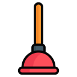

plunger
Unblock the blockage!
Enable Plunger
Show Settings
Automatically play videos
Enable privacy-enhanced mode
Show closed captions
Show video annotations
Display player controls
Display fullscreen button
Disable keyboard controls
Loop video/playlist
Generic related videos
Interface language
Afar / Afaraf
Abkhaz / аҧсуа бызшәа
Avestan / avesta
Afrikaans / Afrikaans
Akan / Akan
Amharic / አማርኛ
Aragonese / aragonés
Arabic / اللغة العربية
Assamese / অসমীয়া
Avaric / авар мацӀ
Aymara / aymar aru
Azerbaijani / azərbaycan dili
Bashkir / башҡорт теле
Belarusian / беларуская мова
Bulgarian / български език
Bihari / भोजपुरी
Bislama / Bislama
Bambara / bamanankan
Bengali / বাংলা
Tibetan / བོད་ཡིག
Breton / brezhoneg
Bosnian / bosanski jezik
Catalan / Català
Chechen / нохчийн мотт
Chamorro / Chamoru
Corsican / corsu
Cree / ᓀᐦᐃᔭᐍᐏᐣ
Czech / čeština
Old Church Slavonic / ѩзыкъ словѣньскъ
Chuvash / чӑваш чӗлхи
Welsh / Cymraeg
Danish / dansk
German / Deutsch
Divehi / Dhivehi
Dzongkha / རྫོང་ཁ
Ewe / Eʋegbe
Greek / Ελληνικά
English / English
Esperanto / Esperanto
Spanish / Español
Estonian / eesti
Basque / euskara
Persian / فارسی
Fula / Fulfulde
Finnish / suomi
Fijian / Vakaviti
Faroese / føroyskt
French / Français
Western Frisian / Frysk
Irish / Gaeilge
Scottish Gaelic / Gàidhlig
Galician / galego
Gujarati / ગુજરાતી
Manx / Gaelg
Hausa / هَوُسَ
Hebrew / עברית
Hindi / हिन्दी
Hiri Motu / Hiri Motu
Croatian / Hrvatski
Haitian / Kreyòl ayisyen
Hungarian / magyar
Armenian / Հայերեն
Herero / Otjiherero
Interlingua / Interlingua
Indonesian / Bahasa Indonesia
Interlingue / Interlingue
Igbo / Asụsụ Igbo
Nuosu / ꆈꌠ꒿ Nuosuhxop
Inupiaq / Iñupiaq
Ido / Ido
Icelandic / Íslenska
Italian / Italiano
Inuktitut / ᐃᓄᒃᑎᑐᑦ
Japanese / 日本語
Javanese / basa Jawa
Georgian / ქართული
Kongo / Kikongo
Kikuyu / Gĩkũyũ
Kwanyama / Kuanyama
Kazakh / қазақ тілі
Kalaallisut / kalaallisut
Khmer / ខេមរភាសា
Kannada / ಕನ್ನಡ
Korean / 한국어
Kanuri / Kanuri
Kashmiri / कश्मीरी
Kurdish / Kurdî
Komi / коми кыв
Cornish / Kernewek
Kyrgyz / Кыргызча
Latin / latine
Luxembourgish / Lëtzebuergesch
Ganda / Luganda
Limburgish / Limburgs
Lingala / Lingála
Lao / ພາສາ
Lithuanian / lietuvių kalba
Luba-Katanga / Tshiluba
Latvian / latviešu valoda
Malagasy / fiteny malagasy
Marshallese / Kajin M̧ajeļ
Māori / te reo Māori
Macedonian / македонски јазик
Malayalam / മലയാളം
Mongolian / Монгол хэл
Marathi / मराठी
Malay / Bahasa Malaysia
Maltese / Malti
Burmese / ဗမာစာ
Nauru / Ekakairũ Naoero
Norwegian Bokmål / Norsk bokmål
Northern Ndebele / isiNdebele
Nepali / नेपाली
Ndonga / Owambo
Dutch / Nederlands
Norwegian Nynorsk / Norsk nynorsk
Norwegian / Norsk
Southern Ndebele / isiNdebele
Navajo / Diné bizaad
Chichewa / chiCheŵa
Occitan / occitan
Ojibwe / ᐊᓂᔑᓈᐯᒧᐎᓐ
Oromo / Afaan Oromoo
Oriya / ଓଡ଼ିଆ
Ossetian / ирон æвзаг
Panjabi / ਪੰਜਾਬੀ
Pāli / पाऴि
Polish / Polski
Pashto / پښتو
Portuguese / Português
Quechua / Runa Simi
Romansh / rumantsch grischun
Kirundi / Ikirundi
Romanian / Română
Russian / Русский
Kinyarwanda / Ikinyarwanda
Sanskrit / संस्कृतम्
Sardinian / sardu
Sindhi / सिन्धी
Northern Sami / Davvisámegiella
Sango / yângâ tî sängö
Sinhala / සිංහල
Slovak / slovenčina
Slovenian / slovenščina
Shona / chiShona
Somali / Soomaaliga
Albanian / Shqip
Serbian / српски језик
Swati / SiSwati
Southern Sotho / Sesotho
Sundanese / Basa Sunda
Swedish / Svenska
Swahili / Kiswahili
Tamil / தமிழ்
Telugu / తెలుగు
Tajik / тоҷикӣ
Thai / ไทย
Tigrinya / ትግርኛ
Turkmen / Türkmen
Tagalog / Wikang Tagalog
Tswana / Setswana
Tonga / faka Tonga
Turkish / Türkçe
Tsonga / Xitsonga
Tatar / татар теле
Twi / Twi
Tahitian / Reo Tahiti
Uyghur / ئۇيغۇرچە
Ukrainian / Українська
Urdu / اردو
Uzbek / Ўзбек
Venda / Tshivenḓa
Vietnamese / Tiếng Việt
Volapük / Volapük
Walloon / walon
Wolof / Wollof
Xhosa / isiXhosa
Yiddish / ייִדיש
Yoruba / Yorùbá
Zhuang / Saɯ cueŋƅ
Chinese / 中文
Zulu / isiZulu